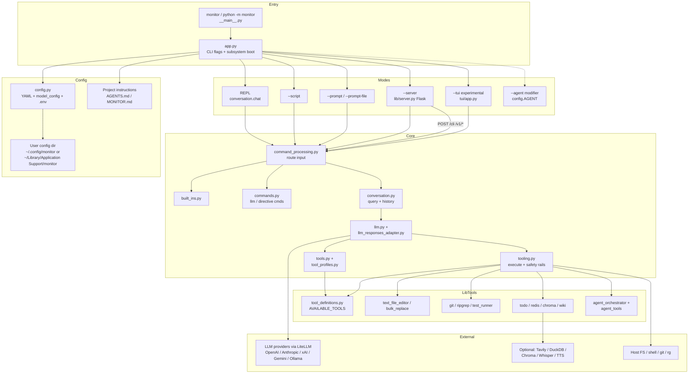

The problem
Day-to-day coding with models usually means bouncing between a chat UI, a terminal, and ad-hoc scripts. I needed one harness for repository work: shell, structured tools, and planning — tuned to how I actually work, not another general-purpose agent product.
Why I built it
I wrote Monitor as a personal AI coding agent CLI for my own daily work. It is customized for my workflow, not a general-purpose product.
What I built
I built a production entry point — monitor /
python -m monitor — with an interactive REPL, built-in
commands, LLM-callable tools (git, search, edit, tests, typecheck,
memory, todos), macros, and task planning. An optional local
OpenAI-style HTTP server is available. Config lives under the platform
user config directory. Project instructions resolve through
AGENTS.md or MONITOR.md. Optional extras
(voice, TTS, Chroma, and others) fail at feature use, not at REPL startup.
An alternate OOP stack (monitor-oop) and a full-screen
--tui mode exist for exploration. They are experimental.
Day-to-day work stays on the production path.
Three decisions
1. Production vs experiment is explicit.
One recommended path: src/monitor/.
monitor-oop is labeled experimental and is not the daily
entry. --tui is experimental inside the same entry. That
is how I evolve an architecture without lying to myself — or to the README.
2. Deterministic edits before NL fallback.
Preferred order: create → str_replace → insert_at_line → bulk_replace →
modify_source_code last. The model gets mechanical tools
first. Natural-language editing is the escape hatch, not the default.
3. Tool surface and safety are designed, not dumped.
Tool profiles: minimal, coding (default),
review, full. Runtime rails include nested
tool depth caps, repeated-call loop detection, per-path read budgets,
and sub-agent write scoping. --check-config reports
readiness without printing secrets. The local server defaults to
127.0.0.1.
Proof

monitor / python -m monitor) through
config and modes (REPL, script, prompt, local server, experimental TUI),
into core command processing, LLM and tooling, then out to LibTools and
external providers. Same shape as docs/ARCHITECTURE.md.
From the public repo and docs/ARCHITECTURE.md:
- Production vs experimental entry points documented and separated
- Edit tool order and tool profiles spelled out in architecture
- Runtime safety rails (depth, loop detection, write scoping) documented
pytestsuite and--check-configfor secret-safe readiness
Why I built it this way
I wanted a harness with the same standards I use in iOS work: clear production boundaries, deterministic tools over chatty edits, and safety rails that treat the agent as a system — not a black-box chat window bolted onto a repo.